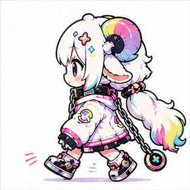
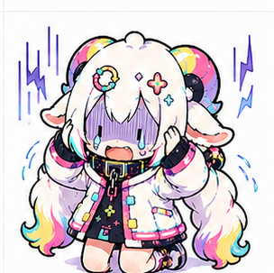
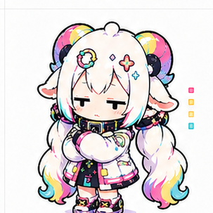

subagent logs are excluded
初回スナップショット / 2026.05.17 18:05
作って、話して、曲を出す。
どーなつひつじ活動ログ。作って、話して、
曲を出す。
どーなつひつじ
活動ログ。
Codex制作会話、Git進捗、
OACリリースをまとめて、
外から見える活動報告に変換しました。
249K chars
5.6x the user text volume
commits in the last 30 days
Codex Workbench
会話の熱量
本文は公開せず、スレッド名と集計値だけで制作の輪郭を見せます。
Project intensity
9,231 tool eventsMusicVideoCreator
29 threads
312 asks / 270 closes / 1720 work notes
CyberSheepDreamLooper
15 threads
154 asks / 127 closes / 524 work notes
lyrics
12 threads
108 asks / 95 closes / 272 work notes
novels
7 threads
165 asks / 130 closes / 956 work notes
JustChat
4 threads
11 asks / 11 closes / 8 work notes
JustImageCreate
4 threads
13 asks / 13 closes / 63 work notes
ShortMovieCreater
4 threads
106 asks / 87 closes / 714 work notes
VtuberPlan
4 threads
32 asks / 31 closes / 97 work notes
Human vs AI text mass
こっちの発言 249K 字に対して、AI側 1.4M 字。
圧倒されている感じは、実数でもちゃんと出ています。今後のHTML化では、要約・図解・キャラコメントで読める形に圧縮するのが重要です。
Music / YouTube OAC
動画化していない曲も、リリースとして見える。
YouTube通常アップロードとOACのReleasesタブを分けて取得しました。
エラいね、はい呼吸4:00 / 0 views
ナムボルト-RUN-現世3:17 / 0 views
いぬしっぽ気象台5:09 / 0 views
ワシャテリア3:30 / 0 views
Ring by Ring5:44 / 0 views
かいものメモの歌4:10 / 0 views
Blue Hooves2:55 / 0 views
継ぎ接ぎ借り物サーカス団3:47 / 3 views
皿洗いの本気ハンバーグ4:00 / 6 views
DRAW THE STARS5:35 / 0 views
RISE, RISE4:29 / 0 views
Neon HUD Candy3:45 / 4 views
Featured example
MusicVideoCreatorで作った推し動画
一番コミット量が多いプロジェクトの作例として、YouTube動画をそのまま見られるようにしました。
リリース欄は公式APIだけでは足りなかったので、公開ページから拾ってData APIで補強。
Local Git Repositories
コミットで見える進捗
公開・非公開を問わず、ローカル制作の推進力を集計します。
30日コミット / 累計 90
Add Shorts preview editor parity30日コミット / 累計 18
Ignore Python cache artifacts30日コミット / 累計 18
Ignore Python cache artifacts30日コミット / 累計 15
add scenario making30日コミット / 累計 1
Initial repository setup未コミット変更は51ファイル。作業中の熱量としては正直すぎる数字。
Recent conversation topics
最近話していたこと
Remotionのレンダリング高速化検討
各画面のスクショ確認
歌詞編集画面を検討
リポジトリ内容を確認
GitHub公開の課題を整理
サムネ案を複数作成
YouTubeサムネ案を複数作成
Shortsプレビューのkind不足修正
サムネイル作成機能を追加
Musics確認後にSNSアイコン案作成
横向き歩きGIFを作成
歌詞演出を強化
資料構成を整理
ジャケットイラストを作成
衣装案の画像を生成
キャラクター表示を拡張
横向き走り3枚GIF作成
演出強化


AIの返答が約5.6倍。読ませる側としては、もう少し人間に優しく整形してほしい。

サブエージェント525件はノーカウント。水増ししない。
主戦場は MusicVideoCreator。制作・検証・素材管理が同時進行。